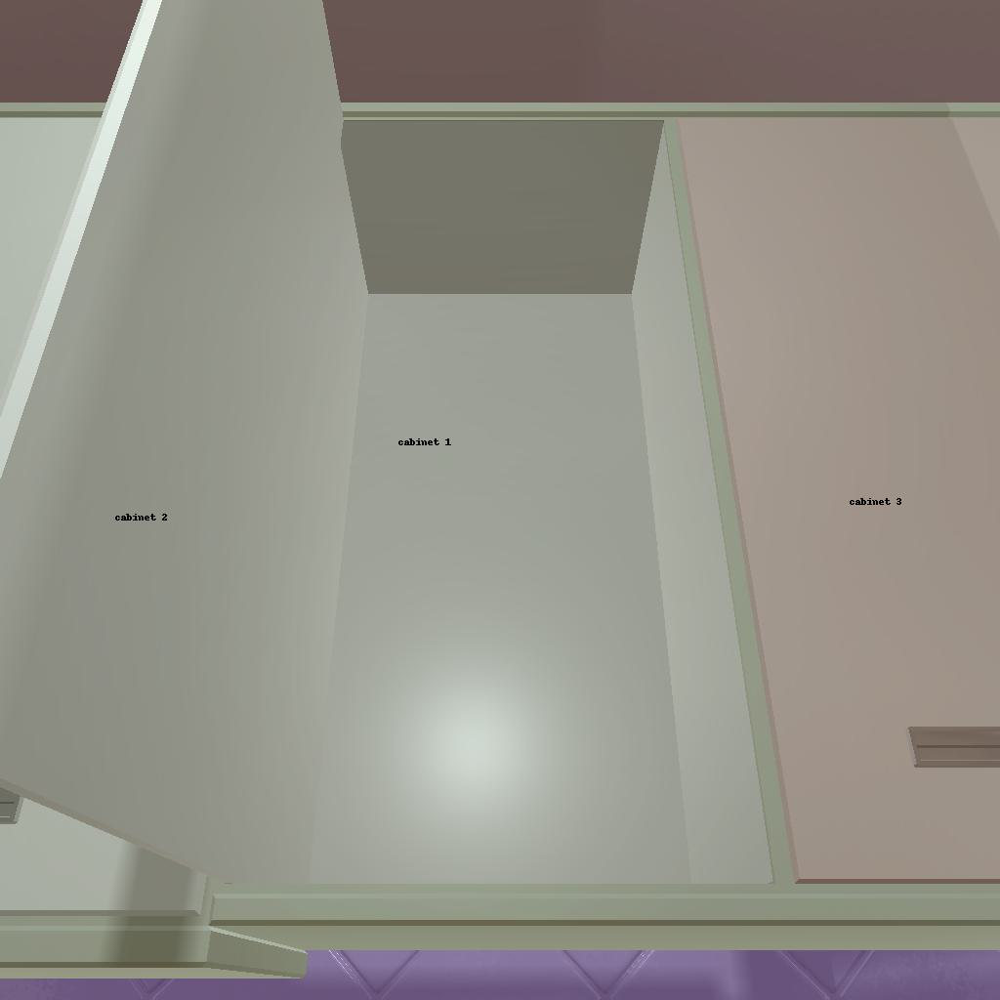

---------------------------------------------------------task: 12---------------------------------------------------------
--------------------------------------------------------------------------------------------------------------------------------------------------------------------
--------------------------------------------------------------------------------------------------------------------------------------------------------------------
Step:--------------------------------------------------------------------------15-------------------------------------------------------------------------------
----------------------------------------
VLM Prompt:
Image1:
Image2:
Image3:
**Instruction**
1. Analyze the provided image to identify all visible household objects, focusing on those relevant to the task description "put a clean tomato in countertop."
2. Use the analysis of the image and the task hint "The agent must find an object of the desired type, pick it up, go to a sink or a basin, clean the object with a sink or basin, and then find the correct location to place it and put it down there. The agent does not need to use soap bottle or faucet to clean the object, and the agent just needs to do action that is "clean the object with the sink or sink basin"." to answer the question: what is the most reasonable action in the choices for the task description "put a clean tomato in countertop"?
4. Decide and write the answer using the template: The answer is: (i): , where i is the real number. If there is no desired object in the image, search every place based on **Initial Observation** to find the object. And if no one is exactly correct, choose a similar answer.
**Initial Observation**
You are in the middle of a room. Looking quickly around you, you can see cabinet (1-6), microwave (1), countertop (1-2), coffeemachine (1), toaster (1), sink (1), sinkbasin (1), fridge (1)
**Answer Choices**
(1): go to microwave 1
(2): go to cabinet 4
(3): go to cabinet 5
(4): go to cabinet 6
(5): go to countertop 1
(6): go to coffeemachine 1
(7): go to toaster 1
(8): go to countertop 2
(9): go to sink 1
(10): go to sinkbasin 1
(11): go to fridge 1
(12): open cabinet 3
(13): close cabinet 3
(14): examine cabinet 3
**Answer**
Let's think step by step by following the instructions.
----------------------------------------
----------------------------------------
Original Response:
First, we need to find a tomato, which is most likely to be found in the fridge or a cabinet. Since we can see cabinet 3 in the image, we can exclude it from our search as we do not see any tomatoes there. The fridge is another common place to store tomatoes.
Secondly, we need to clean the tomato, which requires us to go to a sink or sinkbasin.
Finally, we need to put the clean tomato on the countertop.
Based on the initial observation, we know the location of the fridge, sink, sinkbasin, and countertops.
Considering these steps and the provided answer choices, the most reasonable action to start with is to go to the fridge to find a tomato. Therefore:
The answer is: (11): go to fridge 1
----------------------------------------
----------------------------------------
>>> Refine Original VLM Response and Get Pure Action: go to fridge 1
----------------------------------------
-----------------------------------------------------------------
Running time: 20.997913599014282 seconds
Total Money: 7.46292
-----------------------------------------------------------------
-----------------------------------------------------------------
Text Observation:You arrive at loc 13. The fridge 1 is open. On the fridge 1, you see a apple 1, and a potato 1.
-----------------------------------------------------------------
UNSUCCEED